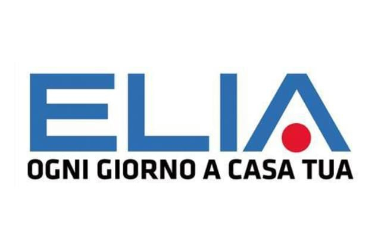
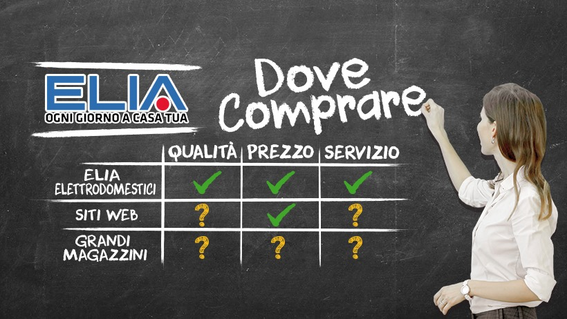
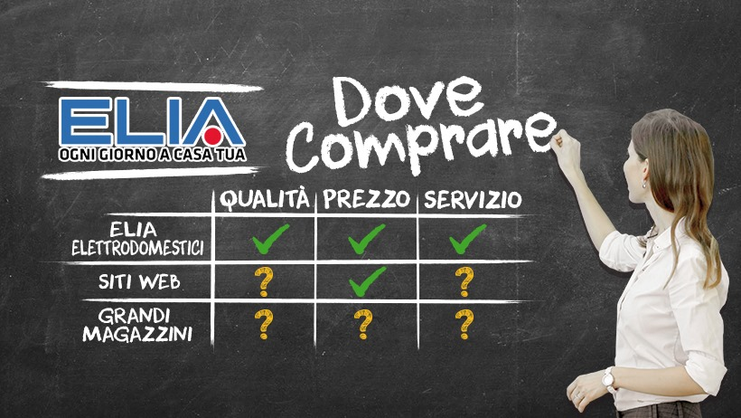

Elia Elettrodomestici
 

La mia prima esperienza di PCTO (ex Alternanza Scuola Lavoro) si è svolta presso l’azienda Elia Elettrodomestici S.r.l., in un periodo compreso tra dicembre 2017 e gennaio 2018, per un totale di 50 ore. Il mio inserimento nel meccanismo aziendale è stato molto rapido e produttivo, soprattutto grazie alle figure di Simone Elia, direttore dell’azienda e mio tutor, e della figlia Lucia, che mi hanno accolto con grande disponibilità, permettendomi di entrare, seppur in maniera parziale, nell’ottica della visione aziendale, e di svolgere una serie di attività molto diversificate.
Competenze acquisite
- Contatto col cliente: inizialmente, infatti, mi è stato spiegato il modo in cui poter aiutare il cliente ad orientarsi nel negozio e a ricevere assistenza;
- Marketing: ho appreso delle semplici nozioni di marketing, come l’importanza e il buon utilizzo delle newsletter, “assemblate” grazie ad un software professionale di nome Mailchimp;
- Gestione immagine social: la base di qualunque buona strategia di marketing è avere una buona immagine sul moderno strumento dei social network, e grazie a questo percorso ho appreso, seppur a livello elementare, qualche strategia;
- Gestione e archivio documenti: un’azienda funzionale deve essere in grado di gestire l’archiviazione dei documenti in maniera poco macchinosa ed ordinata, e l’ultima parte del mio percorso è stata finalizzata anche ad un contributo in questo senso.
Conclusioni
Complessivamente, si è trattato per me di un’esperienza molto formativa, che mi ha permesso di inquadrare il mondo aziendale
da un punto di vista interno che altrimenti non avrei mai avuto.
Il lavoro ha un’importanza cruciale nell’affermazione sociale
dell’individuo, come sancito dalla nostra Costituzione,
e conoscere una realtà lavorativa così positiva e all’avanguardia da vicino, fiore all’occhiello del nostro territorio, è stata
una grandissima opportunità.